The old otter exhibit at the Woodland Park Zoo
//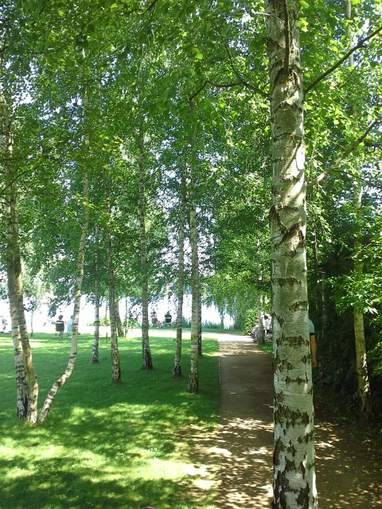A garden backyard in Germany
//An airplane view of the sky from above
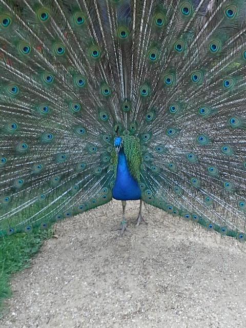Peacocks living on Peacock Island
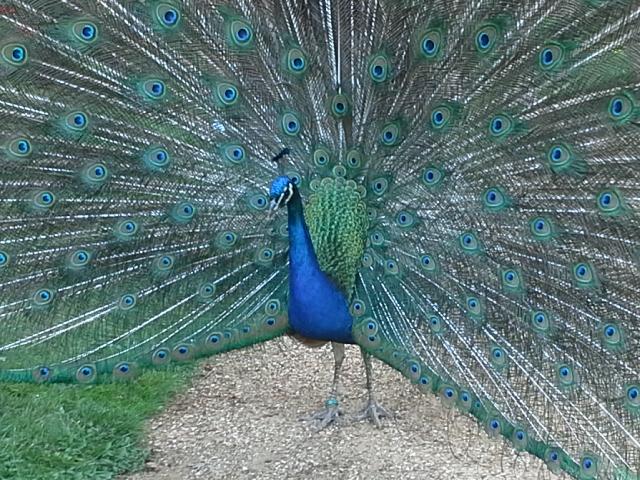Another peacock!
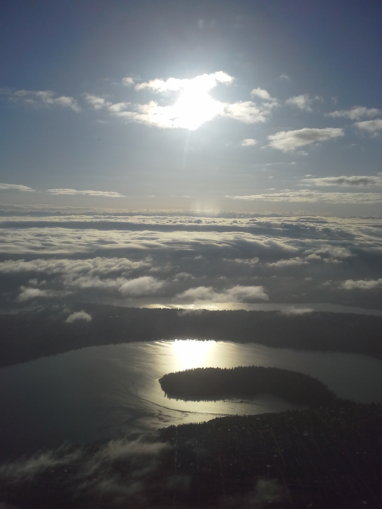Puget Sound from the airplane
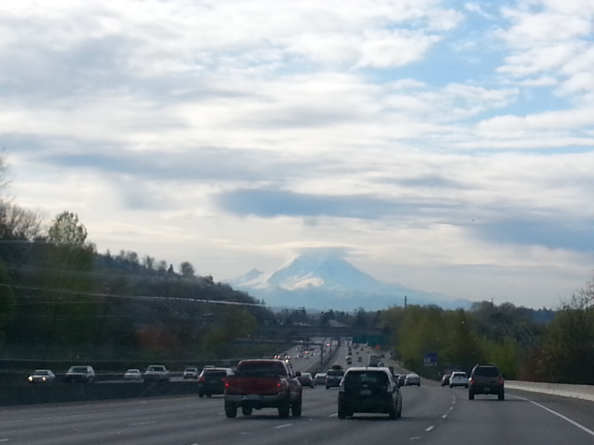Mt. Rainier as seen from I-5
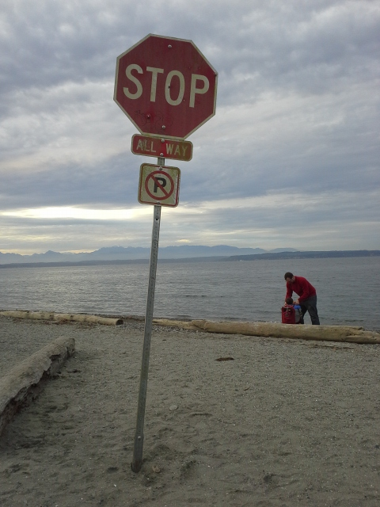Randomly found an entire stop sign on the beach
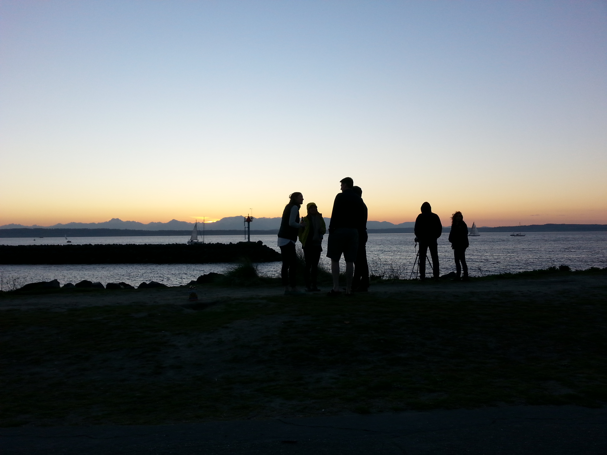
White blossoms of our backyard Japanese Pear Tree
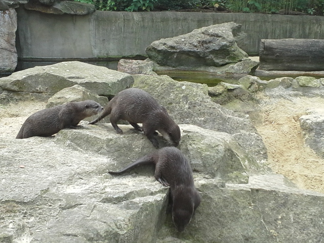The new otter exhibit at the zoo
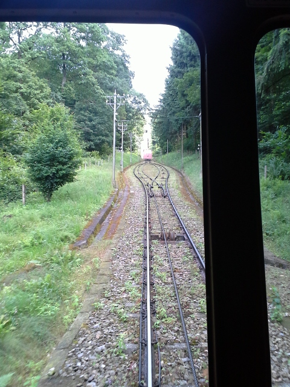Trolley car moving its way up a mountain in Germany
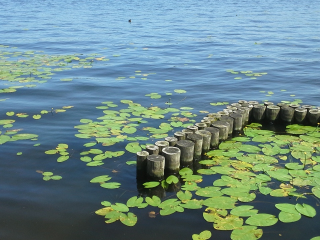Waterfront with lily pads and an old dock
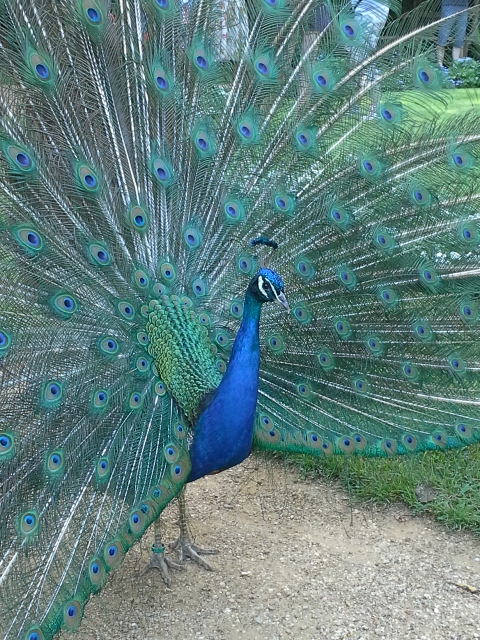Male peacocks show off their feathers
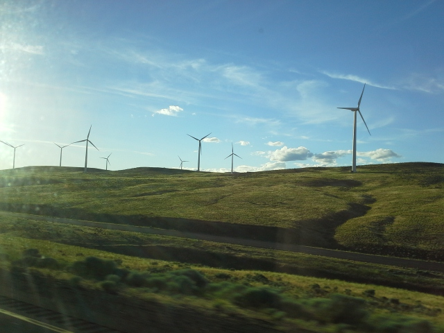On the ride through Eastern Washington, one can see the Ellensburg Windmill Farm
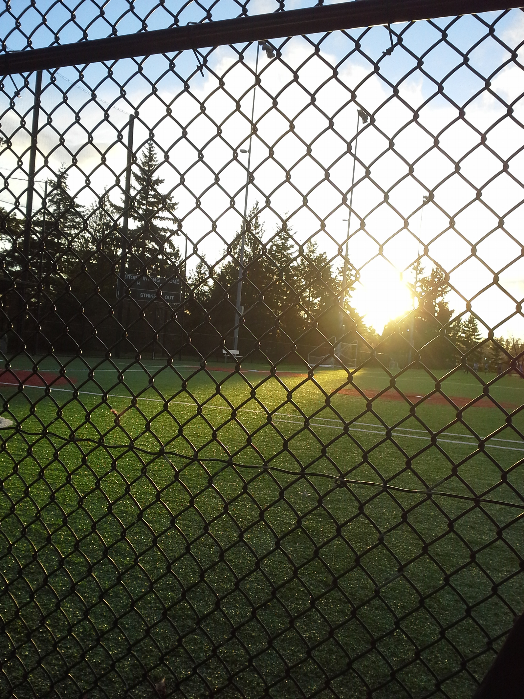Sunlight on the ball fields
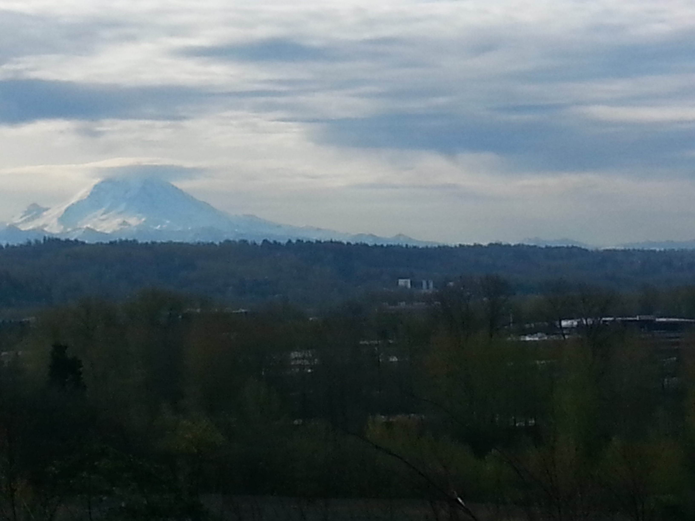Another view of our beautiful PNW mountain
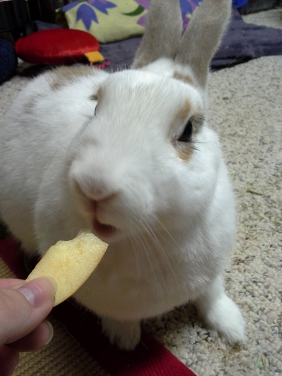Bunnysitting JoJo
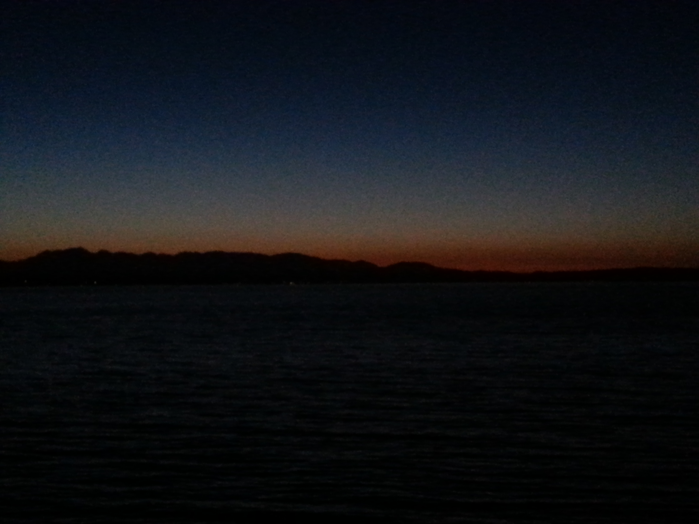Late night sunset at the beach